Objective
This project studies three generative-model ideas from class in a single narrative: deterministic reconstruction (Autoencoder), probabilistic latent modeling (VAE), and adversarial synthesis (DCGAN).
Part 1 explores how latent-space structure affects reconstruction and generation quality, while Part 2 focuses on training dynamics and stability in GANs.
Part 1: Autoencoder and VAE
Task 1: Implement and analyze a basic autoencoder.
I trained three fully-connected autoencoders with latent dimensions 2, 8, and 32 on MNIST. This section asks two questions: how latent capacity affects reconstruction, and whether plain autoencoder latent spaces are valid for random generation.
Model Architecture
The autoencoder uses a deterministic encoder-decoder pipeline.
The encoder compresses a 28 x 28 image to a latent code z, and the decoder maps
z back to pixel space. Training minimizes MSE reconstruction loss, so optimization focuses
on preserving input detail rather than shaping latent-space probability geometry.
Sample Inputs
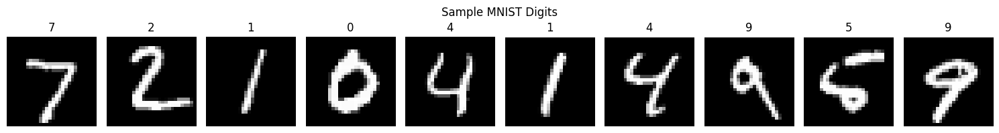
Results Figures
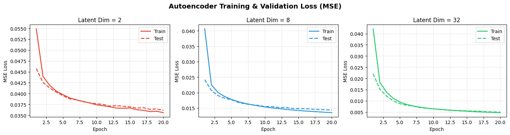
Reconstruction Quality Across Latent Dimensions
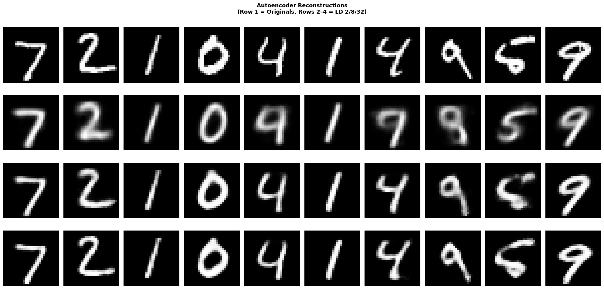
Observations
| Latent Dim | Final Test MSE | Observation |
|---|---|---|
| 2 | 0.03614 | Blurry reconstructions and lost stroke detail due to severe compression. |
| 8 | 0.01436 | Digit structure is mostly preserved, with moderate smoothing. |
| 32 | 0.00496 | Best reconstruction fidelity and sharpest digit boundaries. |
Discussion: How Latent Dimensionality Affects Reconstruction
The figures demonstrate a clear relationship: larger latent dimensions dramatically improve reconstruction quality.
LD=2: With only 2 numbers to encode 784 pixel values, compression is severe. Reconstructions are quite blurry and digit shapes are not accurately recovered. This extreme compression causes significant information loss, evident in the final MSE of 0.03614.
LD=8: Eight latent dimensions provide enough capacity to capture the primary visual structure of most digits. Reconstructions are recognizable and reasonably sharp. The model can distinguish similar-looking digits (4 vs 9, 3 vs 8) better than LD=2. Test MSE drops to 0.01436, showing substantial improvement with just a 4x increase in dimensions.
LD=32: With 32 dimensions, the autoencoder approaches near-perfect reconstruction. Shape and details are preserved. Test MSE is 0.00496—more than 7x lower than LD=2. This demonstrates a clear relationship between reconstruction quality and latent dimensionality.
Random Sampling from Learned Latent Space
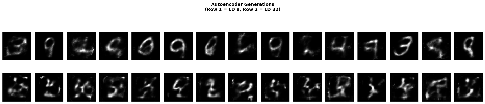
Discussion: Sampling Quality and Latent Space Structure
Reconstruction and generation tell different stories. Both LD=8 and LD=32 produce largely incoherent outputs when random vectors are decoded.
During training, the encoder learns to map inputs to points in the latent space. All 0s might cluster near one location, all 1s near another. These clusters are separated by empty spaces, which don't carry any meaning. When we sample random z from N(0, I), it's likely that we'll have to sample from this empty space. The decoder has been trained to reconstruct digits, so with randomly sampled points in empty space, the decoder is likely to output nonsense.
Interestingly, LD=32 actually performs worse than LD=8 for random generation. With 32 dimensions, the latent space becomes significantly larger. Since this space is larger, the clusters of points corresponding to the actual digits become less likely to sample from. With more "empty space" being sampled from, we find ourselves much more likely to generate nonsense. So while LD=32 excels at reconstruction through capacity, it performs worse for generation.
Task 2: Implement and analyze VAE.
I implemented a VAE with reparameterization and ELBO loss (BCE + KL divergence), trained with latent_dim = 2 which makes the latent-space more visualizable. This section explores how the VAE's structured latent space enables reliable sampling, even with a low-dimensional bottleneck, and how the ELBO loss balances reconstruction and regularization.
Model Architecture and Learning Objective
Unlike AE, the VAE encoder predicts mu(x) and log sigma^2(x) for a Gaussian posterior.
Latent samples are generated as z = mu + sigma * epsilon, where epsilon ~ N(0, I).
Training uses a two-part loss: one term measures reconstruction accuracy, the other measures how well the encoder's distribution
aligns with a standard Gaussian. This dual objective forces the model to learn both meaningful reconstructions and
a latent space that follows a predictable structure.
VAE Training Checkpoints (ELBO)
| Epoch | Train Loss | Test Loss |
|---|---|---|
| 5 | 149.0 | 147.5 |
| 10 | 143.6 | 143.2 |
| 15 | 140.9 | 140.8 |
| 20 | 139.2 | 139.8 |
| 25 | 138.2 | 138.8 |
| 30 | 137.3 | 138.0 |
Training Progress
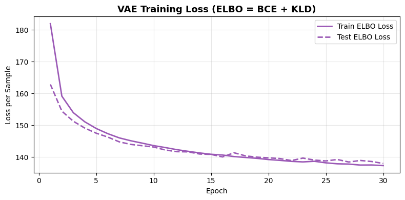
Random Sampling Quality
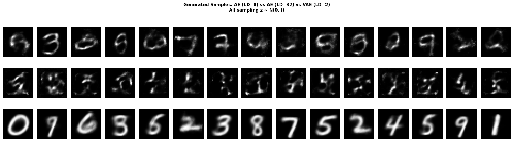
Discussion: Sampling in VAE vs AE
AE (LD=8 and LD=32): Random samples from N(0, I) produce incoherent blobs with no recognizable digit structure. LD=32 actually performs worse than LD=8 because the exponentially larger volume of latent space means random vectors are even less likely to land in regions the decoder has seen during training.
VAE (LD=2): Despite using only 2 latent dimensions, the VAE's random samples produce clearly recognizable digits. The VAE's regularization spreads learned data across the entire unit Gaussian, so any random sample decodes into something meaningful.
VAE success comes from the structure of the latent space. The VAE creates a smooth, continuous structure, while the AE creates a sparse, discontinuous latent space. Similar inputs are close together with "filled" spaces, preventing issues that cause nonsensical outputs.
Latent Space Organization
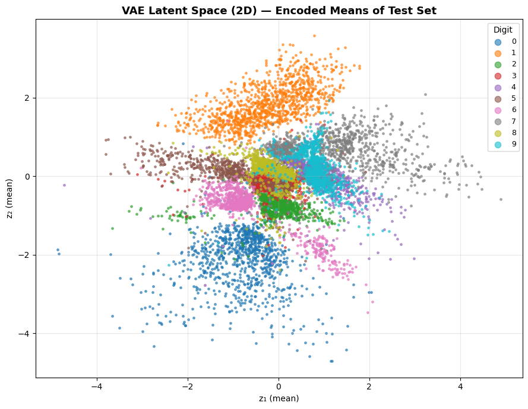
Discussion: Learned Digit Clustering
Digits cluster into distinct regions in 2D latent space. Visually similar digits (4 and 9, 3 and 8) are positioned close together, while more distinct digits (1 and 0) are far apart. This organized structure emerges without explicit labeling and enables the smooth generation behavior we see in VAE sampling.
Latent Grid Visualizations
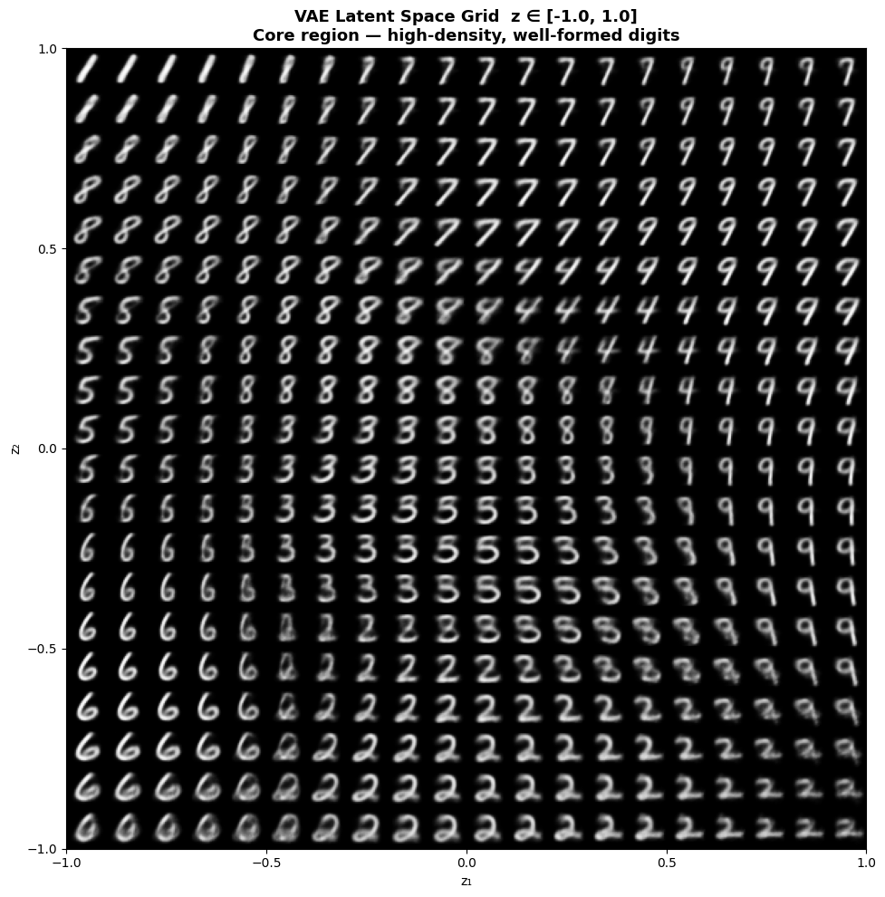
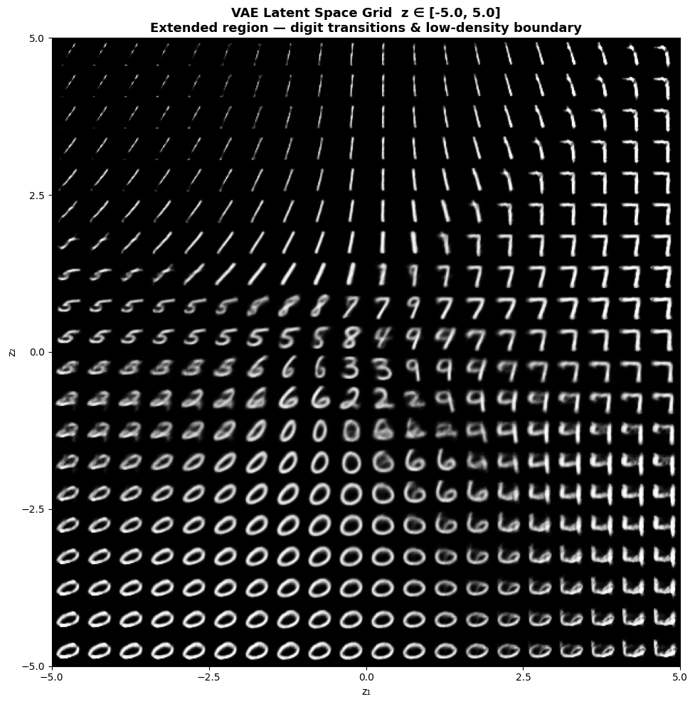
Discussion: VAE Latent Space Visualizations
Comparing the two ranges reveals how the VAE's learned structure varies across the latent space.
Range [-1, 1]: Nearly every decoded point produces a recognizable digit. Neighboring grid positions yield smoothly morphing shapes (a "3" gradually becomes an "8" as you move horizontally). This smooth behavior is the goal of the VAE's structured latent space.
Range [-5, 5]: Moving beyond ±2, images become blurry and ambiguous. At the extremes (±5), outputs are nearly blank or unrecognizable. This degradation occurs because the encoder concentrates around z=0 (where the prior has high density), so far-away regions were rarely seen during training.
The key difference is that the [-1, 1] range is densely populated by the encoder, while [-5, 5] includes sparsely visited territory. The VAE works well where it has learned, and poorly where it hasn't.
Part 2: Deep Convolutional GAN
Task 1: Implement a deep convolutional GAN.
I implemented a DCGAN with transposed convolution generator blocks and convolutional discriminator blocks. Baseline training uses LeakyReLU in the discriminator, Adam optimization, and fixed-noise snapshots every 5 epochs.
We use the Pokemon sprite dataset, which contains 64x64 RGB images of various Pokemon characters. The goal is to train a GAN that can generate new, visually coherent Pokemon-like sprites.
Sample Pokemon Sprites
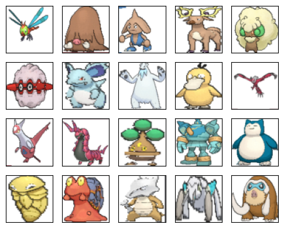
Model Architecture
The generator maps latent noise z to 64 x 64 RGB sprites via
upsampling blocks (ConvTranspose2d + BatchNorm + ReLU), ending with Tanh output to match the [-1, 1] image range.
The discriminator applies a series of downsampling convolution blocks with BatchNorm and LeakyReLU activation,
ultimately outputting a single scalar probability for real vs. fake.
The choice of activation functions and normalization layers reflects decisions made during early GAN research to accelerate training. We will explore how sensitive this architecture choice is through ablation.
Baseline Quantitative Summary
| Setting | D Loss | G Loss | D(real) | D(fake) |
|---|---|---|---|---|
| Baseline (LeakyReLU, a=0.20) | 0.3891 | 4.4282 | 0.879 | 0.018 |
Baseline Dynamics
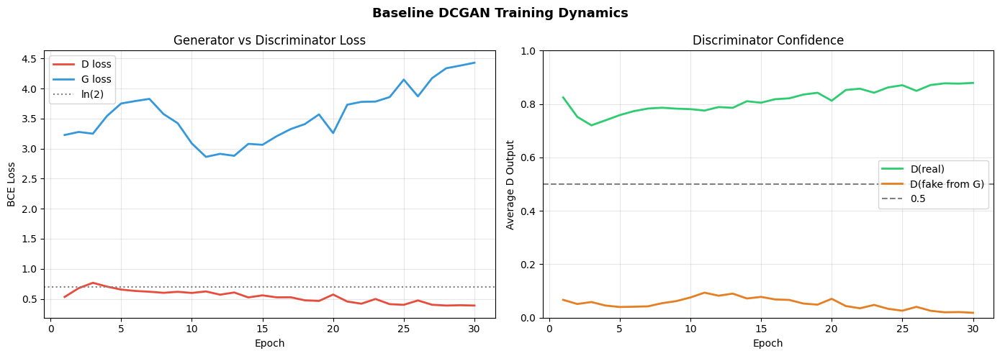
Discussion
The baseline loss curves are oscillatory but bounded, which is typical for adversarial optimization. Late in training, the large separation between discriminator outputs on real and fake images indicates discriminator-dominant behavior rather than a fully balanced equilibrium.
This pattern is common when the discriminator learns faster local texture cues than the generator can match globally. The run is still useful because optimization remains numerically stable and does not diverge, but the confidence gap suggests that additional tuning is needed to reduce one-sided pressure on the generator.
Quality Progression Across Epochs
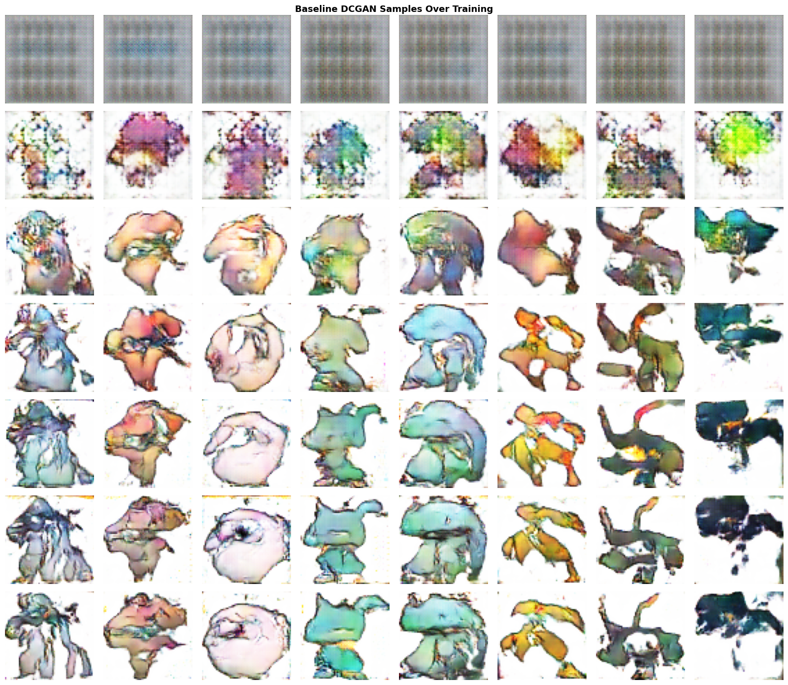
Discussion
Snapshots taken every 5 epochs show a clear quality progression from coarse blobs to more coherent sprite structure. Because the latent vectors are fixed, this improvement reflects learning progress rather than random sample variation.
The most informative transition is from mid to late epochs, where edge definition and color coherence improve together. Early epochs mostly capture palette-level statistics; later epochs begin to model object-like boundaries and local anatomy, which is the desired behavior for sprite synthesis.
Final Baseline Samples
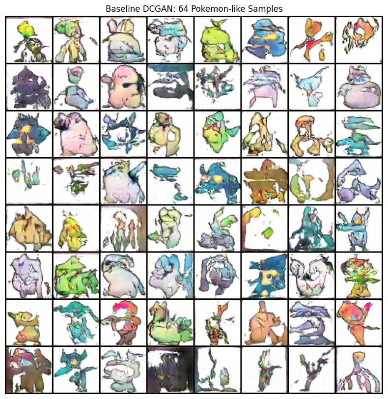
Discussion
The final baseline grid contains many recognizable Pokemon-like shapes but still shows uneven sharpness, consistent with a stable yet imperfectly balanced GAN.
Diversity is present across pose, color, and silhouette, but quality is not uniformly distributed across all samples. That unevenness is consistent with partial mode preference: the generator covers multiple visual modes, yet some modes are clearly easier for it to render than others.
Task 2: GAN Tuning and Evaluation
I compared discriminator activation choices and a small hyperparameter sweep. The goal is to separate runs that only look stable numerically from runs that are both stable and visually diverse.
Experiment Design
Two axes were tested: activation behavior in D (LeakyReLU vs ReLU) and optimization sensitivity
(high learning rate and different negative slopes). Evaluation combines curve-level diagnostics and visual sample quality,
so conclusions are not based on loss values alone.
| Configuration | Final D Loss | Final G Loss | D(real)-D(fake) | Interpretation |
|---|---|---|---|---|
| Baseline (LeakyReLU, a=0.20) | 0.3891 | 4.4282 | 0.861 | Stable baseline, but discriminator-dominant at the end. |
| ReLU in discriminator | 0.3426 | 6.4315 | 0.892 | Harder generator optimization and weaker adversarial balance. |
| High LR (1e-3) | 0.3722 | 4.7185 | 0.875 | Did not explode, but diversity collapsed in quantitative proxies. |
| Leaky slope a=0.05 | 0.3449 | 6.4796 | 0.894 | Most unstable generator behavior late in training. |
| Leaky slope a=0.30 | 0.5749 | 2.8818 | 0.706 | Best overall run in this experiment set. |
Activation Ablation
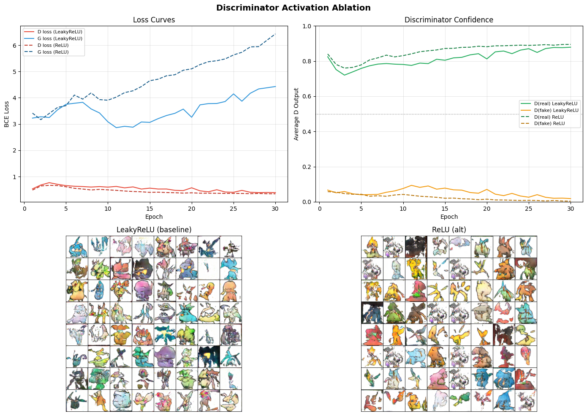
Discussion
Replacing LeakyReLU with standard ReLU produced significantly worse outcomes across both metrics and visuals.
The ReLU variant ended with higher generator loss (L_G ≈ 6.43 vs L_G ≈ 4.43) and a larger discriminator confidence gap.
More importantly, the generated samples lost color diversity and showed less detailed sprite structure.
LeakyReLU samples remained colorful and coherent, while ReLU samples appeared washed out with reduced visual quality.
This demonstrates that activation choice directly impacts training dynamics and that loss curves alone can mask qualitative degradation. The numerical scores looked reasonable, but the generated sprites clearly showed quality loss, highlighting why visual inspection is essential for evaluating GAN training success.
Hyperparameter Sweep
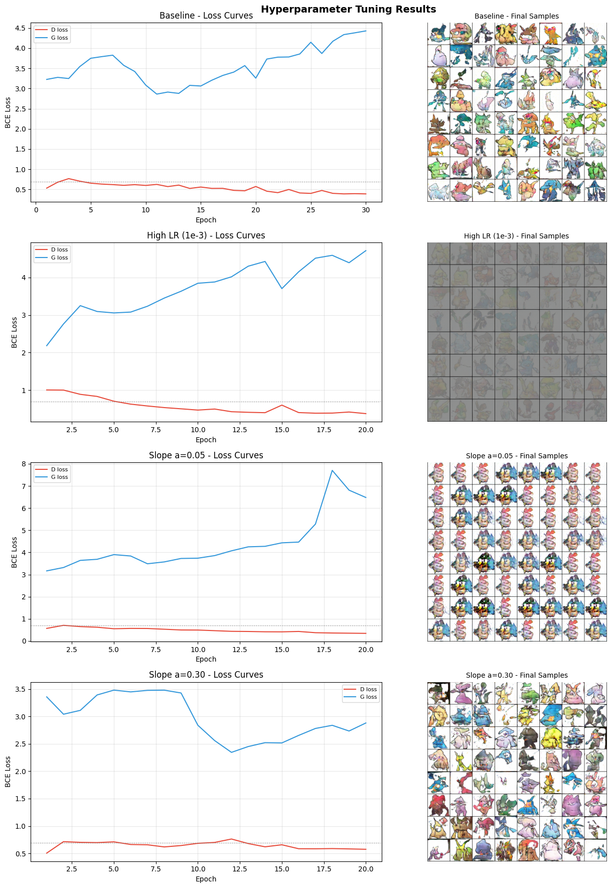
Discussion
High learning rate (10-3) caused severe mode collapse: samples became nearly monochrome gray blobs with no recognizable sprite structure.
Despite bounded loss curves, the generator essentially learned to output average pixel values across all Pokemon, canceling out colors.
Low slope (a=0.05) triggered the opposite problem—extreme mode collapse where the same face-like structure repeated across the entire grid with minimal diversity,
reflecting the "dying ReLU" problem where the discriminator became too powerful. High slope (a=0.30) performed best with colorful, diverse sprites,
the lowest final generator loss (L_G ≈ 2.88), and smoothest loss curves without late-epoch instability.
These results clearly demonstrate that learning rate and leaky slope directly determine whether the generator maintains diversity or collapses. Most critically, loss metrics alone cannot detect mode collapse—bounded, smooth loss curves can coincide with catastrophic visual degradation. Comprehensive evaluation requires both quantitative metrics and visual inspection of generated samples.
Mode Collapse and Stability Issues
In settings with high learning rates, we observed that losses remained finite and seemed stable, yet visual sample diversity degraded noticeably. A purely numeric view of training would have suggested success, but careful inspection of generated samples revealed a covered pattern: restricted visual modes and repeated structures.
This highlights the importance of comprehensive evaluation: loss trajectories, discriminator behavior over time, and most importantly, visual inspection of generated samples across multiple random seeds. A "stable" loss curve may coincide with hidden failures that only appear in the actual outputs.
Summary
AE and VAE experiments highlight the reconstruction-vs-sampling trade-off:
AE (large latent dim) reconstructs best, while VAE provides the most reliable random generation.
DCGAN produces visually coherent Pokemon-like sprites, but training quality is highly sensitive to activation and learning-rate choices.
In this run set, the strongest GAN configuration used LeakyReLU with slope a=0.30.